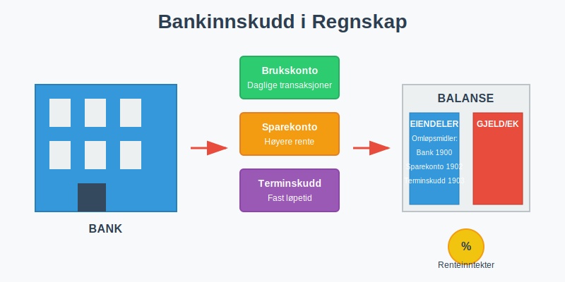
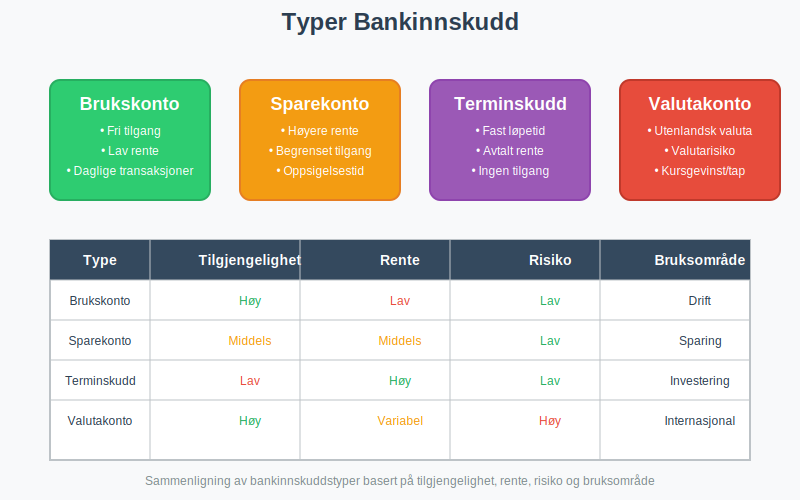
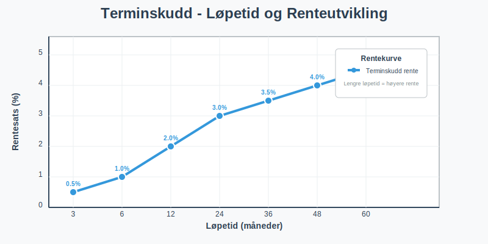
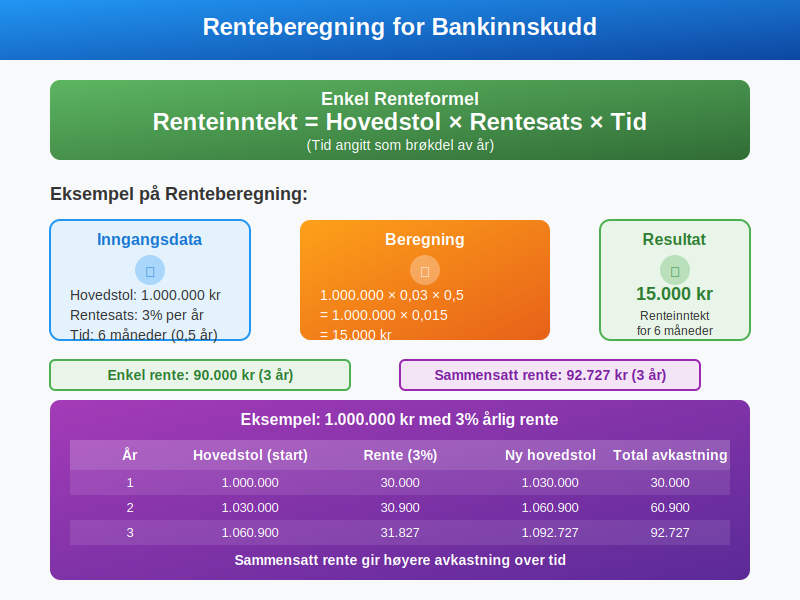
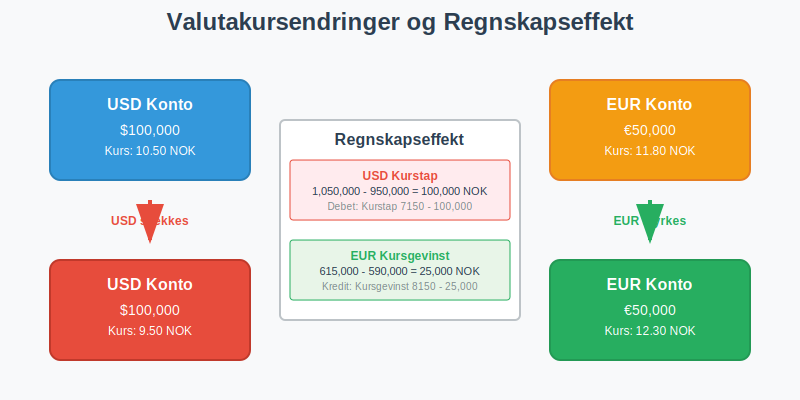
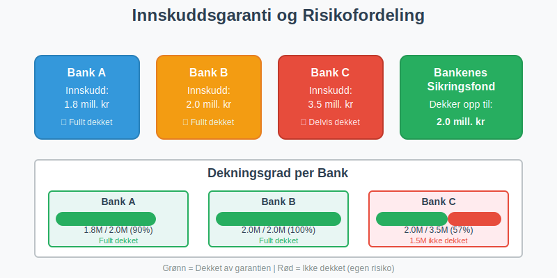
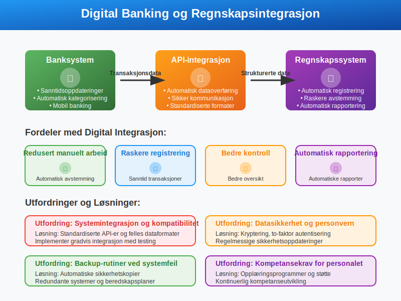
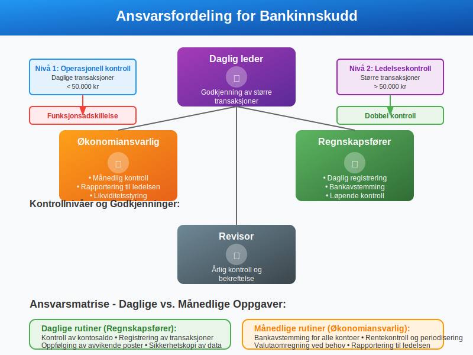
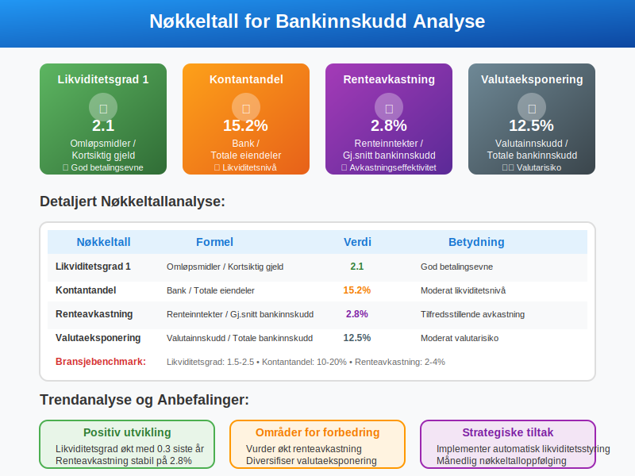

Bankinnskudd er penger som bedrifter og privatpersoner setter inn på bankkontoer for oppbevaring, sparing eller investering. I regnskapet klassifiseres bankinnskudd som omløpsmidler og utgjør en viktig del av bedriftens arbeidskapital.
Les mer om Bedriftsbank for en komplett oversikt over bedriftens banktjenester.
Se også Hva er Bedriftskonto? for en introduksjon til bedriftens primære bankkontoer.

Hva er Bankinnskudd?
Bankinnskudd representerer likvide midler som er plassert i finansinstitusjoner. Disse midlene er tilgjengelige for bedriften og kan brukes til:
- Daglige driftsutgifter og løpende forpliktelser
- Kortsiktige investeringer med lav risiko
- Likviditetsreserver for uforutsette utgifter
- Renteoptjening på overskuddslikviditet
Karakteristikker ved Bankinnskudd
Bankinnskudd har flere viktige egenskaper som påvirker regnskapsføringen:
- Høy likviditet: Lett tilgjengelig for uttak
- Lav risiko: Beskyttet av innskuddsgarantien
- Renteoptjening: Gir avkastning over tid
- Valutaeksponering: Kan være i ulike valutaer
Typer Bankinnskudd
Det finnes flere typer bankinnskudd med ulike egenskaper og regnskapsmessig behandling.

Brukskonto (Driftskonto)
Brukskonto er den mest vanlige kontotypen for bedrifter og brukes til daglige transaksjoner.
Egenskaper ved Brukskonto:
- Fri tilgang til midlene
- Lav eller ingen rente
- Ubegrenset antall transaksjoner
- Mulighet for overtrekk (kassekreditt)
Regnskapsføring av Brukskonto:
Debet: Bank (1900) 100.000
Kredit: Kundefordringer (1500) 100.000
Sparekonto
Sparekonto brukes for å plassere overskuddslikviditet med høyere rente enn brukskonto.
Egenskaper ved Sparekonto:
- Høyere rente enn brukskonto
- Begrenset tilgang til midlene
- Oppsigelsestid kan kreves
- Stabil plassering av midler
Terminskudd (Bundne Innskudd)
Terminskudd er innskudd med fast løpetid og avtalt rente.

Karakteristikker:
- Fast løpetid (1 måned til flere år)
- Avtalt rente ved innskudd
- Ingen tilgang før forfall
- Høyere rente enn sparekonto
Valutakonto
Valutakonto inneholder innskudd i utenlandsk valuta.
Spesielle hensyn:
- Valutarisiko ved kursendringer
- Omregning til norske kroner i regnskapet
- Kursgevinst/kurstap ved endringer
- Sikringsstrategier kan anvendes
Regnskapsføring av Bankinnskudd
Grunnleggende Regnskapsføring
Bankinnskudd regnskapsføres i balansen som omløpsmidler.

Kontoplan for Bankinnskudd:
| Konto | Beskrivelse | Type |
|---|---|---|
| 1900 | Bank | Omløpsmiddel |
| 1901 | Brukskonto | Omløpsmiddel |
| 1902 | Sparekonto | Omløpsmiddel |
| 1903 | Terminskudd | Omløpsmiddel |
| 1910 | Valutakonto USD | Omløpsmiddel |
| 1911 | Valutakonto EUR | Omløpsmiddel |
Innskudd av Kontanter
Når kontanter settes inn på bankkonto:
Debet: Bank (1900) 50.000
Kredit: Kasse (1800) 50.000
Overføring Mellom Kontoer
Ved overføring fra brukskonto til sparekonto:
Debet: Sparekonto (1902) 200.000
Kredit: Brukskonto (1901) 200.000
Rentehåndtering
Regnskapsføring av Renter
Renteinntekter fra bankinnskudd regnskapsføres som finansinntekter.
Påløpte Renter (Periodisering):
Debet: Påløpte renteinntekter (1590) 5.000
Kredit: Renteinntekter (8050) 5.000
Mottatte Renter:
Debet: Bank (1900) 5.000
Kredit: Påløpte renteinntekter (1590) 5.000
Renteberegning

Enkel Renteformel:
Renteinntekt = Hovedstol × Rentesats × Tid
Eksempel på Renteberegning:
- Hovedstol: 1.000.000 kr
- Rentesats: 3% per år
- Tid: 6 måneder
- Renteinntekt: 1.000.000 × 0,03 × 0,5 = 15.000 kr
Sammensatt Rente
For terminskudd med sammensatt rente:
| År | Hovedstol | Rente (3%) | Ny hovedstol |
|---|---|---|---|
| 1 | 1.000.000 | 30.000 | 1.030.000 |
| 2 | 1.030.000 | 30.900 | 1.060.900 |
| 3 | 1.060.900 | 31.827 | 1.092.727 |
Valutainnskudd
Omregning til Norske Kroner
Valutainnskudd må omregnes til NOK i regnskapet.
Omregningskurser:
- Dagskurs: For løpende transaksjoner
- Balansedagskurs: For balanseoppstilling
- Gjennomsnittskurs: For resultatposter
Kursgevinst og Kurstap

Ved Kursgevinst:
Debet: Valutakonto USD (1910) 10.000
Kredit: Kursgevinst (8150) 10.000
Ved Kurstap:
Debet: Kurstap (7150) 5.000
Kredit: Valutakonto USD (1910) 5.000
Bankavstemming og Kontroll
Månedlig Bankavstemming
Bankavstemming er kritisk for å sikre korrekte bankinnskudd i regnskapet.
Avstemmingsprosess:
- Sammenlign bankkontoutskrift med reskontro
- Identifiser forskjeller og uoverensstemmelser
- Undersøk årsaker til avvik
- Korriger feil i regnskapet
- Dokumenter avstemmingen
Vanlige Avstemmingsposter
| Type | Beskrivelse | Regnskapsføring |
|---|---|---|
| Uregistrerte innskudd | Innskudd på bank, ikke i regnskap | Debet Bank, Kredit relevant konto |
| Uregistrerte uttak | Uttak fra bank, ikke i regnskap | Debet relevant konto, Kredit Bank |
| Bankgebyrer | Gebyrer trukket av bank | Debet Bankgebyrer, Kredit Bank |
| Renter | Renter tilskrevet av bank | Debet Bank, Kredit Renteinntekter |
Skattemessige Konsekvenser
Skatteplikt for Renteinntekter
Renteinntekter fra bankinnskudd er skattepliktige inntekter.
For Bedrifter:
- Ordinær skattesats på 22%
- Periodisering etter regnskapsloven
- Fradrag for relaterte kostnader
For Privatpersoner:
- Kapitalinntektsskatt på 22%
- Kildeskatt trekkes av bank (25%)
- Oppgjør ved skatteoppgjør
Fradragsrett
Kostnader knyttet til bankinnskudd kan være fradragsberettiget:
- Bankgebyrer og kontoholdskostnader
- Valutasikringskostnader
- Rådgivningshonorarer
Risikostyring
Innskuddsgaranti
I Norge dekker Bankenes sikringsfond innskudd opp til 2 millioner kroner per innskyter per bank.

Viktige Punkter:
- Automatisk dekning for alle banker
- Per innskyter og per bank
- Inkluderer renter på garantidatoen
- Utbetaling innen 7 virkedager
Spredning av Risiko
For større beløp anbefales risikospredning:
- Flere banker for å maksimere garantidekning
- Ulike produkter (sparekonto, terminskudd)
- Valutadiversifisering for internasjonale bedrifter
- Løpetidsspredning for terminskudd
Likviditetsstyring
Optimalisering av Bankinnskudd
Effektiv likviditetsstyring krever balanse mellom tilgjengelighet og avkastning.
Strategier:
- Likviditetsprognose for å planlegge behov
- Trappeinnskudd med ulike forfallstider
- Automatisk overføring mellom kontoer
- Renteopptimalisering gjennom forhandling
Likviditetsreserver
Bedrifter bør opprettholde likviditetsreserver for:
- Sesongvariasjoner i kontantstrøm
- Uforutsette utgifter og investeringer
- Markedsusikkerhet og konjunktursvingninger
- Vekstmuligheter som krever rask handling
Digitalisering og Moderne Banktjenester
Elektroniske Banktjenester
Moderne banktjenester påvirker regnskapsføringen:
- Sanntidsoppdateringer av kontosaldo
- Automatisk kategorisering av transaksjoner
- API-integrasjon med regnskapssystemer
- Mobil banking for rask tilgang
Regnskapsmessige Implikasjoner

Fordeler:
- Redusert manuelt arbeid ved avstemming
- Raskere registrering av transaksjoner
- Bedre kontroll og oversikt
- Automatisk rapportering
Utfordringer:
- Systemintegrasjon og kompatibilitet
- Datasikkerhet og personvern
- Backup-rutiner ved systemfeil
- Kompetansekrav for personalet
Internkontroll og Rutiner
Etablering av Kontrollrutiner
Gode kontrollrutiner for bankinnskudd inkluderer:
Daglige Rutiner:
- Kontroll av kontosaldo
- Registrering av transaksjoner
- Oppfølging av avvikende poster
- Sikkerhetskopi av data
Månedlige Rutiner:
- Bankavstemming for alle kontoer
- Rentekontroll og periodisering
- Valutaomregning ved behov
- Rapportering til ledelsen
Ansvarsfordeling

Rollefordeling:
- Regnskapsfører: Daglig registrering og avstemming
- Økonomiansvarlig: Månedlig kontroll og rapportering
- Daglig leder: Godkjenning av større transaksjoner
- Revisor: Årlig kontroll og bekreftelse
Rapportering og Analyse
Finansiell Rapportering
Bankinnskudd presenteres i finansielle rapporter:
Balanse:
- Omløpsmidler - Bank og bankinnskudd
- Spesifikasjon av ulike kontotyper
- Valutafordeling ved behov
- Bundne midler som egen post
Kontantstrømoppstilling:
- Endringer i bankinnskudd
- Renteinntekter fra finansaktiviteter
- Valutaeffekter på kontanter
Nøkkeltall og Analyse

Viktige Nøkkeltall:
| Nøkkeltall | Formel | Betydning |
|---|---|---|
| Likviditetsgrad 1 | Omløpsmidler / Kortsiktig gjeld | Betalingsevne |
| Kontantandel | Bank / Totale eiendeler | Likviditetsnivå |
| Renteavkastning | Renteinntekter / Gjennomsnittlig bankinnskudd | Avkastningseffektivitet |
| Valutaeksponering | Valutainnskudd / Totale bankinnskudd | Valutarisiko |
Fremtidige Utviklingstrekk
Digitale Valutaer
Sentralbankens digitale valuta (CBDC) kan påvirke fremtidens bankinnskudd:
- Direkte tilgang til sentralbankpenger
- Redusert behov for tradisjonelle bankkontoer
- Nye regnskapsutfordringer og standarder
- Endret risikoprofil for innskudd
Bærekraftige Investeringer
Økende fokus på ESG-kriterier påvirker valg av bank og produkter:
- Grønne spareprodukter med miljøfokus
- Etiske investeringsalternativer
- Rapportering av bærekraftspåvirkning
- Regulatoriske krav til transparens
Konklusjon
Bankinnskudd er en fundamental del av bedriftens finansielle forvaltning og krever nøye regnskapsmessig behandling. Korrekt håndtering av ulike innskuddstyper, renteinntekter og valutaeksponering er kritisk for:
- Nøyaktige finansielle rapporter og beslutningsgrunnlag
- Effektiv likviditetsstyring og risikokontroll
- Skattemessig compliance og optimalisering
- Internkontroll og rutiner for finansforvaltning
Ved å følge etablerte regnskapsprinsipper og implementere gode kontrollrutiner kan bedrifter sikre optimal forvaltning av sine bankinnskudd samtidig som de oppfyller alle regulatoriske krav.
For mer informasjon om relaterte emner, se våre artikler om bankavstemming, arbeidskapital, depositum og balanse.